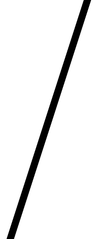
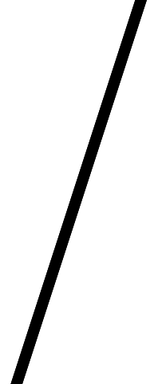

↓マスクに書き込む画像は、このような白黒画像です（そのまま保存して使用可能です）


「(画像)の表示範囲(黒)追加」を使った場合、黒い部分が「表示可能範囲」としてマスクに書き込まれます。
2つめの「細長い斜め画像」で表示範囲をうまく作れば、以下のようなカットインを作ることも可能です。
複数並べて表示範囲を調節することで、こういったアニメーション演出も作れるでしょう。
イベントコマンド 【エフェクト】
キャラクターやピクチャ・マップに対してエフェクトをかけたり、画面のスクロールや色調変更を行うことができます。
【各機能の説明】
・キャラ・ピクチャ・マップのエフェクト
キャラ・ピクチャ・マップに対して、それぞれ以下の処理を行うことができます。
全ての「エフェクト」コマンドは、「変数操作＋」で取得される値には影響を与えませんので、注意してください。
（たとえば「マップ」の「ズーム」エフェクトで150%に拡大してから「変数操作+」でキャラの「画面X座標」を取得したとしても、ズームしない拡大率100%の場合の「画面X座標」の値が返されます）
- ピクチャに対するエフェクト （□〜□ の欄にピクチャ番号を指定してください）
※ピクチャに対するエフェクトは、「ピクチャ」処理で指定した内容とは独立して処理されます。
+ フラッシュ … 指定した赤・緑・青の値をピクチャの「カラー」に加算して1回だけフラッシュします。
±200までの値に対応。
+ 明滅フラッシュ … 指定した赤・緑・青の値をピクチャの「カラー」に加算して1回だけ明滅します。
±200までの値に対応。
+ カラー補正 … 指定した赤・緑・青の値だけピクチャの「カラー」に加算します。
±200までの値に対応。
+ 描画座標シフト[最終値] … 指定したX、Y値だけ、ピクチャの描画座標をずらします。単純に最終値をシフトさせるものです。
+ 描画座標シフト2[角/拡大前] … 指定したX、Y値だけ、角度・拡大率が計算される前のピクチャの描画座標をずらします。
+ 拡大率補正[100(％)基準] … 100を基準として割合でピクチャ拡大率を補正します（150なら1.5倍）。テクニックの一つとして、元のピクチャを1％にして拡大率補正を10000にし、拡大率補正1を1ずつ変更すれば0.01％単位で拡大率を調整できます。
+ 角度補正[±(一周3600)] … ピクチャの角度を加算します。
+ 不透明度補正[±] … 不透明度を加算します。
+ シェイク … 指定したX、Yの移動分で、指定回数だけピクチャを揺らします。
「処理時間」フレームが短いほど、高速に振動します。10万回以上にすると無限になります。
+ ズーム … 指定したX、Y座標を中心に、指定した拡大率でピクチャをズームします。
+ 点滅A[明滅] … 指定したRGB分（最大±200）の差だけ、指定フレームでカラー変更による明滅（変化前、変化後、と交互に変化する）を繰り返します。
「RGB値全てを０に設定する」か、または「フレーム数を０にする」と、点滅は停止します。
+ 点滅B[自動ﾌﾗｯｼｭ] … 指定したRGB（最大±200）の±分だけ、指定フレームでカラー変更によるフラッシュ（ウェイトせずに変化してから元に戻っていく）を繰り返します。
「RGB値全てを０に設定する」か、または「フレーム数を０にする」と、点滅は停止します。
+ 自動拡大縮小[％] … 指定した縦・横の拡大率の±値分だけ、指定フレームでピクチャを拡大縮小します。
1回の拡縮後、休フレームだけ一時停止します。「鼓動」をイメージすると分かりやすいと思います。
+ 自動ﾊﾟﾀｰﾝ切替[1回] … 指定した開始パターン〜終了パターンまで、パターン番号を1ずつ指定フレーム間隔で切り替えます
一回分のパターン切り替えが終わったら、ピクチャ側で設定された元のパターン番号に戻ります。
+ 自動ﾊﾟﾀｰﾝ切替[ループ] … 指定した開始パターン〜終了パターンまで、パターン番号を1ずつ指定フレーム間隔で切り替えます
終了パターンまで切り替わったら、また開始パターンに戻ってループします。
+ 自動ﾊﾟﾀｰﾝ切替[往復] … 指定した開始パターン〜終了パターンまで、パターン番号を1ずつ指定フレーム間隔で切り替えます
終了パターンまで切り替わると、開始パターンまで1ずつ戻り、ループします。
+ 全エフェクト解除[↑全部] … ここから上のエフェクトを全て解除します。
+ ピクチャのコピー … 指定IDのピクチャを他IDにコピーします。
+ ピクチャのID移動 … 指定IDのピクチャを他IDに移動させます。
+ Zオーダーの変更 … 指定IDのピクチャのZオーダー（表示優先順位）を変更します、初期値は0です。詳しくは下部で解説されています。
+ 変換/色相彩度明度 … ピクチャの色相・彩度・明度を変換します。この変換は消去されるまで戻せません。
色相は±で設定でき360で一周(0：赤 120：緑 240：青)、彩度は-255〜で指定、明度は-255〜255の範囲で有効です。
+ 変換/モノトーン … ピクチャをモノトーン（1色）に変換します。色相は前述の通りで、65くらいでセピア色になります。この変換は「変換系のみ全解除」するまで戻せません。
+ 変換/ぼかし … ピクチャをぼかします。ぼかし量は1〜16で指定できます。この変換は「変換系のみ全解除」するまで戻せません。
※ギリギリの境界でパターン分割された画像に対して「ぼかし」を使用した場合、隣のパターンのぼかし分が端に映り込む場合があります。
+ 変換/階調反転 … ピクチャの色を反転させます。この変換は「変換系のみ全解除」するまで戻せません。
+ 変換/レベル補正 … ピクチャの明るさを旧MIN(0以上)〜MAX(255以下)の範囲から、新MIN(0以上)〜MAX(255以下)の範囲に補正します。この変換は「変換系のみ全解除」するまで戻せません。
+ 変換系のみ全解除 … 指定ピクチャの「変換」系エフェクトを全てリセットします。
※【注意！】↑これらの「変換」系エフェクトは、「文字列ピクチャ」・ピクチャ裏技の「図形」・「動画」には使用できません。
+ [動画]再生速度%[0:停] … 動画再生時、速度速度を％で変更します。100で通常速、0で一時停止できます。
+ [動画]再生位置変更[ﾐﾘ秒] … 動画再生時、再生位置をミリ秒で変更します（シーク処理）。
+ [動画]音声％変更 … 動画再生時、動画音量を％で変更します。
※ピクチャのエフェクトによる補正は、ピクチャそのものの処理とは独立して処理されます。
たとえば「座標シフト」を行うと、「ピクチャ処理で指定したX、Y座標＋座標シフト分のX、Y座標」に
描画され続けます。これは座標シフト分のX、Y値を0に戻すか、ピクチャを消去するまで有効です。
※「フラッシュ」や「色調の加算」は、「ピクチャ」処理時のカラー 「0〜200」の範囲を超えて
色調が変わることはありませんので、注意してください。
- キャラに対するエフェクト
+ ピクセル移動(β版) …
ピクセル単位でイベントを移動させます。半マス分を越えるたびに精密座標に±1され、内部ピクセル補正値が0に戻ります。
「主人公」や「マップイベント」をピクセル移動で移動させた場合、マップの侵入不可チップや通行不可マップイベントに当たるとそこで停止します。
また、「並列イベント」でこのエフェクトを使用して主人公を動かすと、「プレイヤー接触」や「イベント接触」のイベントを起動させることができます。
ただし、現状は【主人公だけがピクセル移動を行い、イベント側はマス目移動を行う】という前提の当たり判定処理になっています。「すり抜け」前提ならイベントがピクセル移動しても問題ないと思います。
※【注意！】 現在、「イベント側」の当たり判定はどんな状況でも「マス目単位」で判定するため、もしイベントも主人公もピクセル移動させた場合、（最大半マス内の）見えない当たり判定にぶつかったり、急に押し出されたりする場合があります。また、半タイル以上の速度で移動するとマップに一瞬埋まる可能性があります。
※「ピクセル移動」しても、アニメ状態的には「待機時アニメ」状態のままとなります。 → Ver3.320以降では3フレーム内に1ピクセル以上移動した場合、「移動アニメ」をするようになりました。
※主人公がピクセル移動をやめてマス目移動に戻った場合、ピクセルズレ自体は維持され、障害物にぶつかった時点でピクセル補正値が0に戻ります。
※主人公のピクセル補正値を得たい場合は「変数操作+」から。直接入力したい場合は変数指定9180007（X）、9180008（Y）に値を入出力してください（入力時は要「X番の変数呼出」）。
+ フラッシュ … 指定した赤・緑・青の値を加算してフラッシュします。±100までの値に対応。
マイナスの値を入れると暗くなります。-100,-100,-100で真っ黒に。
+ シェイク … 指定したX、Yの移動分で、指定回数だけキャラクターを揺らします。
「処理時間」フレームが短いほど、高速に振動します。10万回以上を指定すると無限回になります。
+ 点滅A[明滅] … 指定したRGB分の差だけ、指定フレームで明滅（変化前、変化後、と交互に変化する）を繰り返します。
「RGB値全てを０に設定する」か、または「フレーム数を０にする」と、点滅は停止します。
+ 点滅B[自動ﾌﾗｯｼｭ] … 指定したRGB分の差だけ、指定フレームでフラッシュ（ウェイトせずに変化してから元に戻っていく）を繰り返します。
「RGB値全てを０に設定する」か、または「フレーム数を０にする」と、点滅は停止します。
+ 不透明度補正[±] … キャラの不透明度を補正します。
+ 強制ﾋﾟｸﾁｬﾊﾟﾀｰﾝ上書[0：ﾅｼ] … キャラの画像パターンを強制的に上書きします。このパターン指定はピクチャと同じ分け方での数え方です。
+ 移動アニメ強制 … 停止中であっても、強制的にキャラのアニメを「移動中アニメ」状態にすることができます。
〜T.png画像や〜TX.png画像のキャラの移動アニメを行わせるためにVer3.10で用意されました。
+ 向き変更 … キャラの向きを1〜9で変更します（テンキーの方向に対応）。0以下、10以上、5、の値を入れても向きは変化しません。
+ 高さ変更 … キャラの高さを変更します。高さ1以上にすると影の位置はそのままにキャラだけが浮きます。また、高さ1以上になっているキャラに対しては「下半身が半透明」チップが無効になります。
+ 待機時アニメON/OFF … キャラが移動していない状況でのアニメーションのON/OFFを切り替えます。
+ 移動アニメON/OFF … キャラが移動中のアニメーションのON/OFFを切り替えます。
+ 向き固定ON/OFF … キャラの向き固定のON/OFFを切り替えます。固定中は、移動をしても元の方向を向き続けます。
+ すり抜けON/OFF … キャラのすり抜け状態のON/OFFを切り替えます。ONにするとキャラやマップをすり抜けられるようになります。
+ 前面表示ON/OFF … キャラが前面に表示されるようになります。
+ ｷｬﾗﾁｯﾌﾟ変更 … キャラチップの画像を変更します。\s[]、\v[]、\cself[]などの数値・文字列代入特殊文字が使用できます。
+ 重ねｷｬﾗﾁｯﾌﾟ変更(α版) … 層1〜5でキャラに重ねるキャラチップ画像を変更します。着せ替え機能などに使えます。\s[]、\v[]、\cself[]などの数値・文字列代入特殊文字が使用できます。
- マップに対するエフェクト
+ ズーム … 指定したX、Y座標を中心に、指定した拡大率でマップ、イベント、
プレイヤーキャラ、仲間キャラ、背景、フォグのズームを行います。
元の状態に戻す場合は、拡大率を100％にしてコマンドを実行してください。
※ただし、拡大率は100％以上の値にしてください。100％未満にすることも可能ですが、
本来100％で描画される範囲の外は真っ黒になってしまったり、ループの逆側のチップが
1マス分描画されてしまったりします。処理速度を維持する都合上、この現象への対処は
行いませんので、ご了承下さい。この現象をカバーして開発なさる分には構いません。
※「ズーム前に画面外だった場所」をこのマップのズーム機能で表示させようとした場合、
マップイベントが表示されなくなる場合があります。
これ自体は現状の仕様なので、パラメータを工夫して、そうならないように使ってください。
※また、拡大率を100％以上にした場合、主人公が画面の端に行った場合に見切れて
主人公が見えなくなりますが、マップのズームとしてはこれで正常な仕様です。
拡大したままプレイさせる場合は、マップの端の方を通行不能にするなどの工夫が必要です。
+ シェイク … 画面を揺らします。揺れの種類は、「縦揺れ・横揺れ・揺れを止める」から選択可。
「揺れの強さ」と「揺れの速さ」が設定可能で、「揺れの強さ」は一度の揺れ幅の
大きさを表し、「揺れの速さ」は一度の揺れが起きる時間の早さを表します。
共に、値が大きくなるほど揺れが激しくなります。
10万フレーム以上を指定すると無限に実行されます。
+ [P]処理 … プロ版専用の機能です→ [P]
- マスク エフェクト
マスクはピクチャやキャラの表示範囲を一部封印することができる機能です。
使えるマスク用のキャンバス（内部的に白黒画像として持っています）は「1レイヤー分」だけです。
何らかの対象の「マスクをON」にすると、「マスクで設定した表示範囲だけ」しか表示されなくなります。
マスク画像に書き込む場合は「白黒の画像」を使います。
+ マスク全リセット
+ 全面[表示]に塗りつぶす ：
まったく表示範囲を封じない、デフォルト状態に戻します。
+ 全面[非表示]に塗りつぶす ：
画面全体の表示を封じる状態にします。この直後にマスクをONにすると、当然何も表示されません。
+ (画像)の表示範囲(黒)追加
画像をもとに一部だけを表示可能にします。
選んだ画像の、真っ黒の部分だけが表示可能範囲として書き込まれます。
\s[]、\v[]、\cself[]などの数値・文字列代入特殊文字が使用できます。
+ (画像)の非表示範囲(白)追加
画像をもとに一部だけを表示不能にします。
選んだ画像の、真っ白の部分だけが表示不能範囲として書き込まれます。
\s[]、\v[]、\cself[]などの数値・文字列代入特殊文字が使用できます。
+ （キャラID）のキャラのマスクON
+ （キャラID）のキャラのマスク解除
+ マップのマスクON
+ マップのマスク解除
+ (ピクチャID)をﾋﾟｸﾁｬﾏｽｸONにする
+ (ピクチャID)のﾋﾟｸﾁｬﾏｽｸ解除
| 【マスクで使われる素材 / マスクの実例】 ↓マスクに書き込む画像は、このような白黒画像です（そのまま保存して使用可能です）  「(画像)の表示範囲(黒)追加」を使った場合、黒い部分が「表示可能範囲」としてマスクに書き込まれます。 2つめの「細長い斜め画像」で表示範囲をうまく作れば、以下のようなカットインを作ることも可能です。 複数並べて表示範囲を調節することで、こういったアニメーション演出も作れるでしょう。 |
・画面のスクロール
画面をスクロールさせます（画面の中心をずらす）。ここでは以下の4種類の指定ができます。
- 画面を移動 … 画面をX、Yの数値ボックスに指定したチップ数だけスクロールさせます。なお、X､Yの数値ボックスには変数も指定可能です（例：2000000と入力すれば通常変数0番の値が読み込まれます）
- 主人公に戻す … 主人公の場所が中心になるようスクロールを戻します。
- スクロールをロック … 以後、画面をスクロールさせないようにします。
- ロック解除 … スクロールのロックを解除します。ただし、解除しても自動で主人公中心になったりはしないので、たいていの場合はこの後「主人公に戻す」を使う必要があるでしょう。
なお、「移動完了までウェイト」をオンにしているとスクロール処理が終わるまでイベント処理を進めずに待機します。
・色調変更
画面内のRGB（赤・緑・青）それぞれの色調を変化させます。0が最小値で、200が最大値、100が通常の値です。「フラッシュにする」をチェックすると、フレーム数の間だけその色で画面を光らせます。
- 色リセット … 色を全て100に戻します。
- 真っ暗に … 色を0、0、0にします。これで色調変更やフラッシュを行うとブラックになります。
- 真っ白に … 色を200、200、200にします。これで色調変更を行うと白っぽく、フラッシュは完全なホワイトになります。
※ピクチャ番号がマイナスのピクチャは「マップの上、イベントの下」にある都合上、この色調変更の影響を受けます。
ピクチャ番号が0以上のピクチャは色調変更の影響を受けません。(2017/2/27)
【Zオーダーの解説】
「Zオーダー」はピクチャ間の上下関係を柔軟に変更できるパラメーターです。
「表示」されたばかりのピクチャのZオーダーは全て「0」です。
→ あるピクチャのZオーダーを「1」に変更すると、そのピクチャはZオーダー「0」の全ピクチャより前面に表示されます。
Zオーダーを「-1」にするとZオーダー「0」の全ピクチャより背面に表示されます。
Zオーダーには「-2000000000(-20億)」のような値も指定可能です。
→ 同じ「Zオーダー」なら通常通り「ピクチャ番号」の大きい方が上に表示されます。
→ ただし、「Zオーダー」をいくらにしても以下のピクチャ番号ごとの上下関係からは抜けられません。
Zオーダーをいくら変えてもピクチャ番号【-10万】【0】【10万】の壁は越えられない、と考えると理解しやすいでしょう。
|
【例】「ピクチャ番号【-1〜-99999】のZオーダー【100】のピクチャ」は
「ピクチャ番号【0〜99999】のZオーダー【0】のピクチャ」よりも下に表示されます。
（Zオーダーがいくら大きくても各ピクチャ範囲の上下関係の方が優先されてしまっている例）
→ 「Zオーダー」を変更すると従来のピクチャ表示とは別の処理に
切り替わるのですが、これによって少しだけ描画負荷が増えるようです。
開発者の環境ではピクチャ2000枚で0.3ms程度の増加が確認されました。
全ピクチャの「Zオーダー」を全部「0」にすると従来の表示処理に戻るので
負荷が少し軽くなります。(2024/03/12修正)
[解説映像（サンプルゲーム内の紹介]
【Zオーダーの利用例】
・開発進行と共に「ピクチャ番号」をひたすら後ろに継ぎ足しながら使っても上下関係を「Zオーダー」で指定し直せるので、ピクチャ管理が少し楽になります。
・「選択中のカードだけ最前面に表示する」といった演出が「Zオーダーの変更」だけで簡単に作れます。
・2D見下ろしRPGのキャラや物体を全てピクチャで表示するなど、大量の画像が表示される中で画像の重なり関係を高速で変化させたい場合にもそこそこの負荷で実現できるようになります。
（「ピクチャIDのコピー・移動」でも実現できますが、数百枚のピクチャのIDを移動させると非常に大きな負荷がかかります。ですが、「Zオーダー」なら1フレーム中にどんなに多くのピクチャの表示順を変更しても負荷は変わりません）
・強引に3D描画をするときも、より高速な処理で作れることが期待できます。